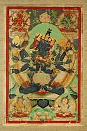

<p>
    <span style="font-size:12px">
        В Тибете, <strong>Гухьясамаджи </strong>особенно почитаема в школе Гелуг, скорее всего, из-за древности его текстов. Гухьясамаджи Тантра была одним из первых переведенных с санскрита на тибетский древним текстом, время перевода 8 век. Традиция гласит, что сам Будда Шакьямуни провозгласил эту Тантру утром после своего просветления. Другие традиции утверждают, что Майтрейя преподал тантру в мире Тушита, и что индийский ученый Асанга принес ее в мир людей в 4-м веке. Как и другие божества Непревзойденной Йога-тантры традиции, Гухьясамаджи связан с Буддой Акшобхья. Многие тексты, в том числе Гухьясамаджа тантра, просто называют его Акшобхья или Акшобьяваджра.<br />
        В иконографии У Гухьясамаджи шесть рук, он сидит в позе лотоса на лунном диске, находящемся поверх лотосового трона. У него три лица: центральное лицо - синего цвета, правое - белое, левое - красное. Три лица символизируют преобразование трёх ядов: привязанности, невежества (заблуждения), гнева (ненависти). Тело Гухьясамаджи тёмно-синего цвета. В объятиях его - супруга Спаршаваджра, чьё тело синего цвета. У неё также шесть рук, но одна голова. Гухьясамаджа и его супруга держат одни и те же символы - ваджру, колокольчик, меч, драгоценность, исполняющую желания, колесо Закона (дхармачакра), лотос.
    </span>
</p>
